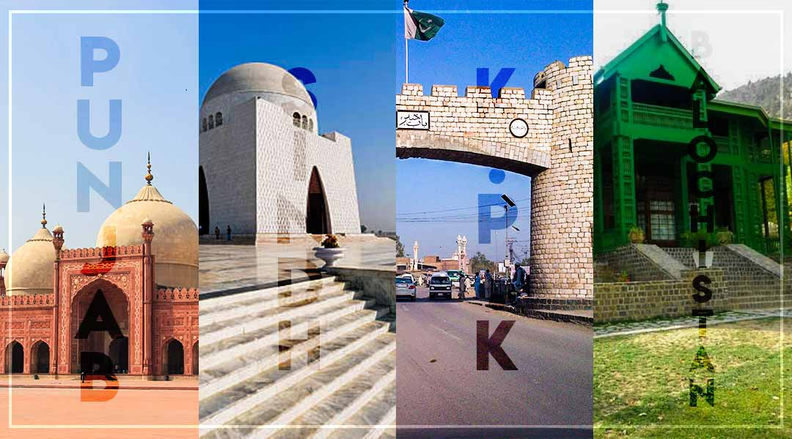
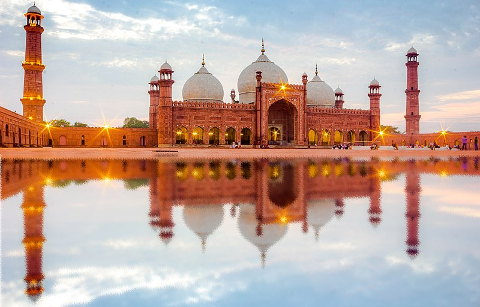
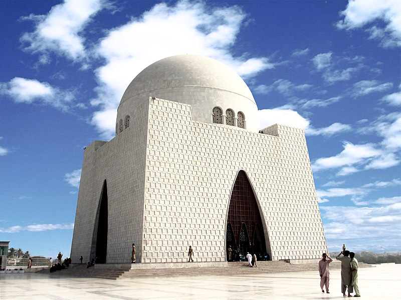

Provinces

Pakistan consists of four provinces — Punjab, Sindh, Balochistan, and Khyber Pakhtunkhwa. Balochistan is the largest by land area (about 44% of the country), while Punjab is the most populous, often called the land of five rivers.
Each province is subdivided into divisions, districts, tehsils (or talukas), and union councils — a layered administrative structure governing one of the world's most diverse nations.
Punjab
Most Populous
Capital: Lahore
Sindh
Economic Heartland
Capital: Karachi
Khyber Pakhtunkhwa
Gateway to the Mountains
Capital: Peshawar
Balochistan
Largest by Area
Capital: Quetta
Punjab

Punjab lies in eastern Pakistan, bordering India and Kashmir. It is the largest province by population and a major agricultural and industrial heartland, fed by five rivers — Jhelum, Chenab, Ravi, Beas, and Sutlej — flowing from the Indus system.
Key products include wheat, rice, cotton, sugarcane, fruits, vegetables, textiles, leather goods, sports goods, and machinery. Historically, Punjab hosted the Indus Valley Civilization and later saw Persian, Greek, Muslim, Sikh, and British rule.
Punjab's cultural heritage includes the Lahore Fort, Badshahi Mosque, Shalimar Gardens, the Tomb of Jahangir, Noor Mahal, and Rohtas Fort. Lahore, the provincial capital, is widely considered Pakistan's cultural and educational hub.
Sindh

Sindh lies in the southeast, bordered by Balochistan, Punjab, India, and the Arabian Sea. Its landscape features the Indus plains, the Thar Desert in the east, and the Kirthar Mountains in the west.
Karachi, the capital, is Pakistan's largest city and economic powerhouse. Sindh's history traces back to the Indus Valley Civilization and later the Achaemenids, Greeks, Mauryans, Arabs, Mughals, and the British.
Khyber Pakhtunkhwa

Khyber Pakhtunkhwa (KPK) is located in the northwest, bordered by Balochistan, Punjab, Gilgit-Baltistan, Azad Kashmir, and Afghanistan. Its terrain ranges from rugged mountain ranges and deep valleys to fertile plains. Peshawar, one of the oldest cities in the region, is the provincial capital.
The province has deep historical significance — once at the core of the Gandhara civilization and a stronghold of Buddhism, with ancient sites near Pushkalavati. Today KPK is renowned for its natural beauty, particularly the breathtaking Swat Valley and the Karakoram Highway.
Balochistan

Balochistan, in the southwest, is Pakistan's largest province by area but least populated. It borders Khyber Pakhtunkhwa, Punjab, Sindh, Iran, Afghanistan, and the Arabian Sea. The province is an extensive plateau divided by rugged mountain ranges.
It hosts the deep-sea Gwadar Port and significant natural resources, especially natural gas. Although only a small portion of its land is arable, agriculture and livestock contribute heavily to the economy. Gwadar is rapidly emerging as a strategic hub under CPEC.